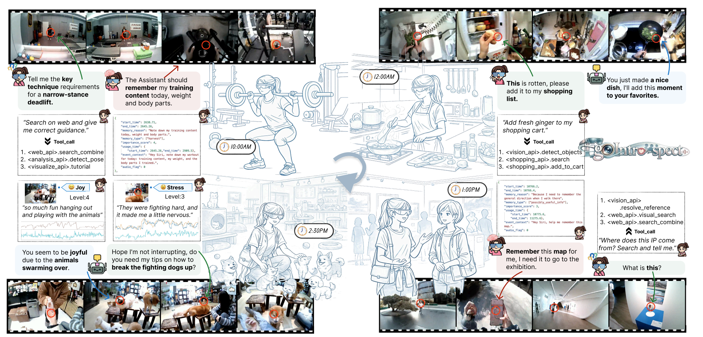
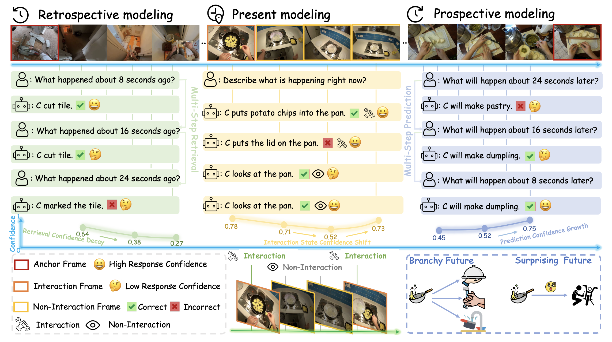
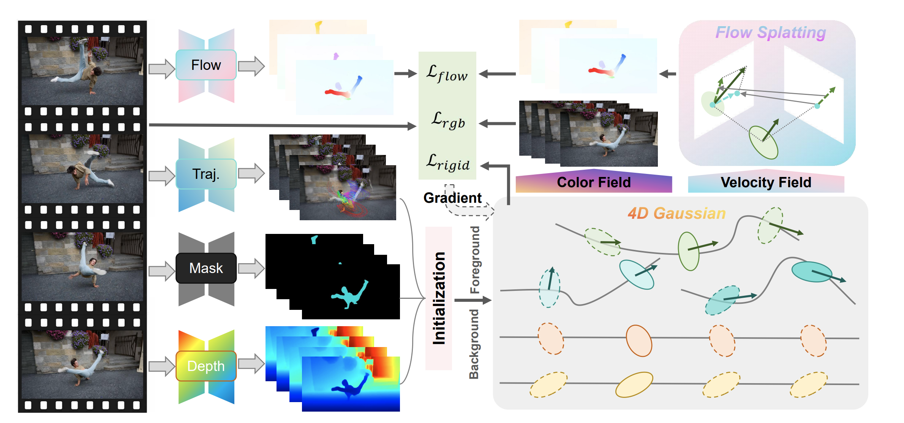

|
Jinzhao Li I am a Ph.D. student at the College of AI, Tsinghua University, advised by Prof. Miao Liu. Before that, I obtained my B.S. and B.Eng. from Tsinghua University. Since Summer 2025, I have been an algorithm intern at ByteDance. My current research interests lie in multimodal foundation models and embodied AI. Feel free to contact me if you are interested in our work or would like to collaborate: lijinzha22@mails.tsinghua.edu.cn. |

|
Honors & Awards
|
Education |

|
Ph.D. Student, Tsinghua University 2026–2031 (expected) |
|
|
B.S. and B.Eng., Tsinghua University 2022–2026 Ranked 1st in Major |
Publications / Preprints* Equal contribution † Project lead |

|
IPIBench: Evaluating Interactive Proactive Intelligence of MLLMs under Continuous Streams
Jinzhao Li, Yinuo Chen, Wenxuan Song, Yijia Lei, Yichi Zhang, Honglei Yan, Panwang Pan, Miao Liu arXiv, 2026 project page / arXiv / code We introduce IPIBench, a benchmark for interactive proactive intelligence in streaming video, and IPI-Agent, a training-free framework that stabilizes proactive triggering and coordinates reactive–proactive interactions through interaction control and temporal gating. |
|
 |
EgoIntrospect: An Egocentric Dataset and Benchmark for User-Centric Internal State Reasoning
Zeyu Wang, Chang Liu, Eduardus Tjitrahardja, Yuntao Wang, Borislav Pavlov, Fangfei Gou, ..., Qi Wang, Jinzhao Li, Jiacheng Hua, ..., Yin Li, Qianying Wang, Yuanchun Shi, Miao Liu arXiv, 2026 project page / arXiv / code We introduce EgoIntrospect, the first egocentric multimodal dataset for understanding users’ internal states in AI-assistant interactions, covering affective experience, interactive intent, and cognitive memory from synchronized video, audio, gaze, motion, and physiological signals. |
|
 |
EgoSAT: A Comprehensive Benchmark of Egocentric Streaming Interaction Understanding
Yijia Lei, Jinzhao Li†, Yichi Zhang, Jiacheng Hua, Yin Li, Miao Liu ECCV, 2026 project page / arXiv / code We introduce EgoSAT, a comprehensive benchmark for egocentric video reasoning in streaming settings. EgoSAT unifies retrospective reasoning, online understanding, and prospective anticipation, evaluating whether VLMs can reason over past, present, and future events using only previously observed frames. |

|
EgoProx: Evaluating MLLMs on Egocentric 3D Proximity Reasoning Across a Cognitive Hierarchy
Jinzhao Li, Yinuo Chen, Dongxu Piao, Panwang Pan, Yifan Yu, Dong Wang, Honglei Yan, Liang Yue, Shaofei Wang, Yixin Chen, Siyuan Huang, Miao Liu CVPR, 2026 project page / arXiv / code We introduce EgoProx, a benchmark for egocentric 3D proximity reasoning that evaluates whether MLLMs can reason about spatial relations between the human body and surrounding objects across a cognitive hierarchy of intention, exploration, exploitation, and chain of actions. |
|
 |
Learning Efficient 4D Gaussian Representations from Monocular Videos with Flow Splatting
Shengjun Zhang*, Jinzhao Li*, Xin Fei, Yueqi Duan arXiv, 2026 project page / arXiv / code In this paper, we propose Flow Splatting, an efficient 4D Gaussian reconstruction framework that leverages optical flow supervision to jointly model appearance and motion from monocular dynamic videos. |

|
Scene Splatter: Momentum 3D Scene Generation from Single Image with Video Diffusion Model
Shengjun Zhang, Jinzhao Li, Xin Fei, Hao Liu, Yueqi Duan CVPR, 2025 project page / arXiv / code In this paper, we propose Scene Splatter, a momentum 3D scene generation paradigm that introduces existing scene information as momentum during generation to balance generative priors and scene consistency. |
|
Jinzhao Li | Last update: Jun. 26, 2026 |